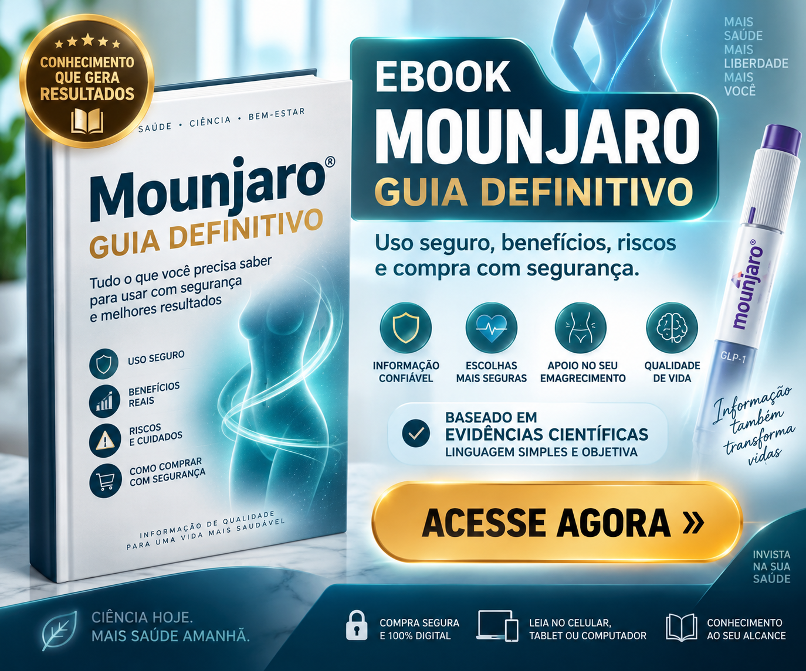

Benefícios com
contexto
Uma introdução ao assunto para compreender a conversa sobre Mounjaro e emagrecimento, sem tratar expectativas como garantias.
Conhecimento para começarComo usar Mounjaro da Forma Certa para emagrecer
Conheça o ebook que coloca benefícios, riscos e cuidados no centro da conversa. Para entender o tema e levar perguntas melhores à sua consulta.
Conteúdo educativo. Não substitui avaliação ou prescrição médica.

POR DENTRO DO TEMA
Entre opiniões nas redes e promessas de transformação, existe espaço para uma leitura consciente. Estes são os temas apresentados na divulgação do guia.
Uma introdução ao assunto para compreender a conversa sobre Mounjaro e emagrecimento, sem tratar expectativas como garantias.
Conhecimento para começarCuidados e limites precisam estar na mesma conversa que os possíveis benefícios. Informação não equivale a uma indicação individual.
Atenção ao que importaO tema da compra segura e a importância da orientação profissional para evitar decisões baseadas apenas em anúncios e relatos.
Perguntas melhores na consultaUm ebook pode ampliar seu entendimento. A decisão sobre tratamento deve ser feita com um profissional que conheça sua saúde e sua história.
Entenda o papel deste material ↓UMA LEITURA PARA VOCÊ
Quer compreender o tema além dos vídeos curtos e opiniões nas redes.
Deseja organizar dúvidas antes de conversar com seu médico.
Valoriza informação sobre cuidados e riscos, além dos possíveis benefícios.
Este material não é um protocolo de automedicação, uma consulta ou uma promessa de perda de peso.
INFORMAÇÃO QUE ACOMPANHA VOCÊ
Como usar Mounjaro da Forma Certa para emagrecer
R$ 13,90
Continue para o checkout da Cakto para concluir sua compra.
Você está adquirindo informação, não um medicamento.
ANTES DE CONTINUAR
Não. O material é educativo e não substitui avaliação, diagnóstico, prescrição ou acompanhamento profissional. Não inicie, interrompa ou altere um tratamento com base em um ebook.
Não. Esta página apresenta um ebook independente. Não vende, fornece ou prescreve medicamentos e não representa o fabricante de Mounjaro.
Não. A leitura não garante resultados clínicos ou perda de peso. A resposta a qualquer tratamento é individual e deve ser acompanhada por um profissional.
Sim. Mounjaro exige prescrição médica e sua venda no Brasil está sujeita à retenção da receita. A indicação e os cuidados devem ser definidos pelo médico. Consulte a orientação da Anvisa.
O ebook custa R$ 13,90. Clique em “Comprar agora na Cakto” para abrir o checkout e conferir as condições de pagamento e as informações de acesso antes de concluir a compra.